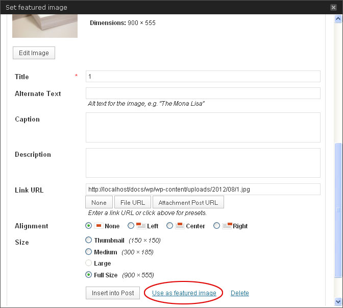

Created: Aug 25, 2012
Last Updated: Sep 15, 2012
Author: Saurabh Sharma
email:
xconsau@gmail.com
Dear buyer,
First of all, let me thank you for showing your trust in my theme and purchasing it. I have handcrafted this document to lessen your efforts in configuring and using this theme seamlessly. If you find any bug or issue which is beyond the scope of this documentation file, feel free to contact me through my Themeforest profile page here. Thanks so much!
Table of Contents
- Introduction
- Install WordPress
- Install WooCommerce Plugin
- Install Xing Theme
- Activate the Theme
- Create Category and Posts
- Create a Home Page
- Create a Blog Page
- Create a Portfolio Page
- Create a Contact Page
- Create Navigation Menu
- Using Post Formats
- Using Widget Areas
- Custom Widgets
- Xing Theme Options
- Visual Short Codes and Style Elements
- Using Language options
- wp-pagenavi Plugin Support
- Basic HTML structure
- CSS files and structure
- Javascript files
- php files and their role
- Frequently Asked Questions
- Sources and Credits
1. Introduction - top
Xing is a clean and modern WordPress theme designed for corporate websites and e-commerce ventures. The theme can be used for small to large business setups, online shopping stores, personal portfolio, or as an editorial blog. Supported with custom templates, widgets, short codes, and customization options; the theme can be a suitable choice for your business/ecommerce projects.
2. Install WordPress - top
If you have not set up your WordPress installation yet, you can grab a copy of latest WordPress version here. Next, go through the installation instructions inside readme.html file and set up your WordPress installation.
3. Install WooCommerce Plugin - top
The theme is designed to support WooCommerce Plugin. If you plan to use this theme as an e-commerce theme, it will be required to install WooCommerce Plugin. You can download this plugin from the following URL:
http://wordpress.org/extend/plugins/woocommerce/
Upon activation, the plugin will prompt you to install basic shop pages. Click on "Install WooCommerce Pages" to create basic shop pages for WooCommerce. You can also import products data from wp-content/plugins/woocommerce/dummy_data.xml file, or from your_download_zip/dummy_data/all.xml
You can find detailed user guide for WooCommerce Plugin on the following URL:
http://wcdocs.woothemes.com/category/user-guide/
The above mentioned link contains instructions on using the plugin. In rest of this documentation, we will consider theme usage without WooCommerce plugin installed. If the plugin is installed, you will see an accounts bar at the top right corner of header section, with all other features same..
Note: Even if you do not install WooCommerce Plugin, the theme will work normal. WooCommerce usage is optional, and is required only if you plan to use the theme for ecommerce purpose.
4. Install Xing Theme - top
In order to install Xing Theme, follow these steps:
1. Extract your download package .zip file.
2. Next, look for the folder named 'xing'.
3. Upload the xing folder to http://yourdomain.com/your_wordpress_dir/wp-content/themes/ directory via any FTP program like Filezilla or CuteFTP.
Important: Do NOT install your download zip directly via WordPress Theme install option.
Speed Install: In order to save your time, zip your "xing" folder and upload via FTP or File manager of your website Control panel. Next, you can extract the folder inside your file manager of Control panel, and delete the .zip file.
If you wish to install the theme via WordPress admin, you will need to ZIP the xing folder, and install it via admin interface.
5. Activate the Theme - top
Log into your WordPress admin using the following URL: http://yourdomain.com/your_wordpress_dir/wp-admin
Next, go to Appearance > Themes. Here, you should see a thumbnail of Xing theme. Click on the ‘Activate’ link to activate the theme.
After activation, preview this theme by clicking on your blog name (top left corner) > Visit Site. The theme will look quite similar to the image, as shown below:
Important: The theme may look empty at first load. This is because we have not configured any settings yet.
On first load, you may see some unwanted widgets inside top-right section of header area. You can remove those widgets by navigating to WordPress Appearance > Widgets > Default Header Bar. Delete or pull out any unwanted widgets from this section. You can ofcourse place appropriate widgets in this section later on.
Disable the Admin Bar on top
As of WordPress version 3.1, an Admin Bar was introduced. You can disable it inside Users > Your Profile section, as shown below:
Uncheck the toolbar option. Next, scroll down and click on "Update Profile" button to save the changes. The admin bar will hide now.
6. Create Category and Posts - top
So far, we have installed the theme and activated it with some default settings. As we move further, the theme's content will depend on categories, posts, and featured images associated with them. Most of the site content will contain images. (This includes portfolio, blog and widgets). So let’s start by creating a category and publish some posts in it. But before that, a quick note about image preparation.
Image Preparation
The maximum possible width of any image we will use in this theme will be around 800px. For better results, you can prepare images of around 800px width and any height. You can save these images in web optimized .jpg or .png format, and keep on your hard drive. We will upload them later. Let's now create a category and some posts.
Create a Category
Go to Posts > Categories. Next, create a new category (say, Portfolio) and click on "Add Category". A newly created category will appear.
Find a Category ID: Hover your mouse pointer on the category name and watch it's link in the status bar of your browser. You will see a link as taxonomy=category&tag_ID=xx. This xx is the category ID. Note this down as we will need the category IDs to populate the widgets, blog and portfolio pages.
You can follow same procedure tfor creating more categories; like News, Photography, Designing, Blog etc. Let's create some posts for our "Portfolio" category.
Create a Post with Featured Image
1. Go to Posts > Add New. Next, enter a Post Title and Post Content.
2. Scroll down to the right-bottom side of your page. You will see a panel for "Featured Image". Click on the "Set featured image" link.
A modal box will appear, asking for the media files. Click on the "Select Files" from Computer.
Next, browse/upload your image file and set it as featured image by clicking on the link "Use as featured image". Make sure you choose the "Full Size" option.

After you are done, close the modal box. The newly set featured image will appear inside the "Featured Image" panel.
3. Finally, assign the post to an appropriate category (in our case, Portfolio) and click on "Publish" button.
That is all required to create a post.. You will need to repeat the same procedure for creating more posts in various categories. i.e. Create a post, set featured image, and publish it in appropriate category. Once you are done with handful of posts and categories, we can use them on templates like Blog and Portfolio.
Important: We have used a standard post format here. We will cover the post formats later in this documentation. Post formats can be changed any time as you desire.
7. Create a Home Page- top
By default, WordPress shows blog posts on front page until the front page is set as some static page. In our case, we will create a Home page and set it as static front page. You can follow these steps for creating a Home page:
1. Go to Pages > Add New. Next, enter a title for your home page. Say – "Home".
2. Leave the content area empty.
3. Publish the page.
This will create an empty Home Page. But this page will still not appear on front page. For that, it will be required to set Front page Displays.
Important: We have just created the Home page. But this will not appear as front page yet. For that, we will need to adjust some Front Page Display Settings.
Go to Settings > Reading > Front page displays > A static page. Next, set Front page as "Home", and leave Posts page to NONE. Finally, Save the changes.
Once you are done, check the site. It should show your newly created Home page with empty content.
Adding content to the Home Page
The Home page uses custom short codes and markup. You can find this sample markup inside xing/dummy_data/home.txt file. Open this file and copy all the contents. Next, edit your home page in HTML mode and paste this markup. Finally, update the page. You can modify the content and short codes as per your requirements. There are some variations for Home page markup which you can find inside xing/dummy_data/ folder's text files.
8. Create a Blog page - top
A blog page can be created by using a 'Blog' template and providing category IDs inside page options. Below are the steps for creating a blog page:
1. Go to Pages > Add New. Next, enter a title for blog page. Say - “Blog”.
2. Leave the content section empty, and scroll down to Page Options > Portfolio and Blog Options panel.
3. Inside "Category IDs to fetch Portfolio or Blog Posts", enter the category ID of your Blog posts. (For example: 3,5,7).
4. Inside "Posts per page", enter a number of posts to show.
5. Next, inside "Template" menu on the right side, select a Blog template and publish the page. (The theme comes with three blog templates. You can choose any template from the available ones. In this example, we will choose the 'Blog - Masonry Grid Style' template).
6. After publishing the page, view it in browser. It will show posts from the Categories as provided inside the Page Options Panel. In our example, I have used the "Portfolio" category to show on Blog Page.
Up to here, we have seen how to create a Home Page and a Blog Page. Let's now see how to create a Portfolio Page.
9. Create a Portfolio page - top
A portfolio page can be created in exactly the same way as we did for Blog Page. The only difference is the template being assigned. i.e. instead of 'Blog' template, we will assign the 'Portfolio' template to the page. Below is a quick summary of steps involved in creating a portfolio page.
1. Go to Pages > Add New. Next, enter a title for portfolio page. Say - “My Portfolio”.
2. Inside content editor, you can place any custom markup. This will appear just above the portfolio gallery.
3.
Scroll down to Page Options > Portfolio and Blog Options panel.
4. Inside "Category IDs to fetch Portfolio or Blog Posts", enter the category ID of your Portfolio posts. (For example: 3,7,10).
5. Inside "Posts per page", enter a number of posts to show.
6. Next, inside "Template" menu on the right side, select a Portfolio template and publish the page. (The theme comes with 8 templates for portfolio. You can assign any template to the portfolio page. In this example, we are using the 'Portfolio Filterable - 3 Col with SB' template).
6. After publishing the page, view it in browser. It will show posts from the Categories as provided inside the Page Options Panel. In our example, I have used the 'Portfolio' category to show on Portfolio Page.
Up to here, we have seen how to create Home, Blog and Portfolio pages. Let's now see how to create a Contact Page.
10. Create a Contact page - top
Xing comes with a built-in ajax/php contact page template. In order to use this template, follow these steps:
1. Go to Pages > Add New. Next, enter a title for contact page. Say - "Contact us".
2. Inside content editor, write some content that should appear just above the contact form.
3. Next, from the “Template” menu on right side, select a template called “Contact Page” and click on “Publish” to save the changes.
This will create a contact form with ajax/php form validation.
How to set your email address and custom mail sent message?
In order to configure your email address, go to Appearance > Xing Options > General. Next, scroll down and configure your email address and mail sent message, as shown below:

Finally, scroll down and click on "Save Changes" to save these settings.
11. Create Navigation Menu - top
Xing supports two WordPress menus (Primary menu in header section, and secondary menu at the top). Let's see how to create and use them:
1. Go to Appearance > Menus.
2. On the right side, you will see a form for adding new menu. Enter a menu name; say "menu-1" and click on "Create Menu" button.
Inside "Theme Locations" section, choose your menu from "Primary Menu" dropdown list and click on "Save".
Next, scroll down to "Pages" section and select the pages you wish to show on menu. Click on "Add to Menu" button.
These pages will now appear on the right side.
Tip: You can drag menu items up-down to manage the order of appearance. You can drag them left-right to set as sub-page. You can also edit "Navigation Label" and "Title Attribute" if you wish to do so.
Finally, click on "Save Menu" button. Your primary menu will be created. You can add more menu items in future as you create more pages.
Following similar procedure, you can create one more menu and use it for the "Secondary Top Menu" location. You can hide Secondary Menu Navigation bar inside Appearance > Xing Options > Header > Disable Top Navigation Bar.
12. Using Post Formats - top
Post formats are used to style and display a post according to a specific content. Xing supports 3 Custom Post Formats other than the "Standard" post format. These post formats can be set from the "Fromat" panel of your post editor. Let's see how to use these post formats.
1. Audio
An audio post format can be used to display a self hosted audio using jPlayer. In order to create an Audio post, follow these steps:
a. Create a new post, and assign a title. Say, "My Audio Post".
b. Next, scroll down to the Post Options > Post Format Options panel.
c. Inside "Audio URL", provide a full URL to the hosted Audio. For example, http://mysite.com/resources/audio_file.mp3
d. From the "Select an audio type" menu, choose the type of audio provided. In this case, we have provided an mp3 file, so the audio type will be mp3. Use oga for .ogg file, and m4a for .mp4 files.
e. Next, choose the "Audio" post format from the "Format" panel, and publish the post.
Your audio post is ready to play the song. You can also set a featured image for audio post. If the image is set, it will show just above the audio player.
2. Gallery
A gallery post can be used to show the post image attachments in form of a Slider. Before creating a gallery post, make sure you prepare some images that are of same height. These images will be attached to the post and used inside a Slider. In order to create a Gallery post, follow these steps:
a. Create a new post, and give a title. Say, "My gallery Post".
b. Next, click on the "Upload/Insert" media button for attaching images.
A modal box will appear. Click on the "Select Files" from computer and upload the gallery image. After the image is uploaded, scroll down and click on "Save all changes".
After you have saved the changes, a new gallery will be created, as shown below:
c. Once again, click on save all changes, and close the modal box.
d. Repeat step b and upload more images. i.e. click on the "Upload/Insert" media icon, and add more images. These will be automatically added to the Gallery. (You can also drag and drop multiple images at once inside the media uploader).
e. After adding images, choose "Gallery" from the "Format" panel on right side, and Publish the post.
The post will now show a slider of all attached images.
3. Video
An Video post format can be used to display a self hosted Video using the oEmbed feature. WordPress supports video embedding using the oEmbed. In order to create a Video post, follow these steps:
a. Create a new post, and assign a title. Say, "My Video Post".
b. Next, scroll down to the Post Options > Post Format Options panel.
c. Inside "Video URL", provide a full URL to the hosted Video. For example, http://vimeo.com/41369274
d. From the "Format" panel on right side, choose "Video", and Publish the post.
Your post will show a standalone video player as provided by the respective video sites. The theme supports all major video formats that are supported by oEmbed.
13. Using Widget Areas - top
Widget area is a place where you can drag and drop widgets for the theme. Xing supports 7 widget areas (1 in header, 1 in sidebar, and 5 in the footer). Additionally, we have an option for creating Exclusive Widget Areas for sidebar and header section that can be used on different pages and posts.
In order to access your widget areas, go to Appearance > Widgets. You will see 7 widget areas, as shown below:
These are the default widget areas. The theme will use these default widget areas when no exclusive widget area is defined for a page or post.
Important: Please note that Blog related pages like author, archives, date, category etc will use these default widget areas. Exclusive widget areas are ONLY FOR PAGES and SINGLE POSTS.
Let’s have a quick look on each widget area:
| Widget Area |
Description |
| Default Header Bar |
The default header widget area. |
| Default Sidebar |
The default widget area for Sidebar. |
| Default Secondary Column 1 |
First widget area of the footer section. |
| Default Secondary Column 2 |
Second widget area of the footer section. |
| Default Secondary Column 3 |
Third widget area of the footer section. |
| Default Secondary Column 4 |
Fourth widget area of the footer section. |
| Default Secondary Column 5 |
Fifth widget area of the footer section. |
Exclusive Widget Areas
As mentioned earlier, Xing supports Exclusive Widget Areas for sidebar and header section. As an example, let’s create an exclusive widget area for "About Us" page.
1. Go to Pages > Add New, and create a new page called "About Us".
2. Scroll down to the Page Options > Sidebar Options panel, and enable the "Create an exclusive sidebar for this page" option, as shown below:
Finally, click on "Publish" to save the changes on this page. This will register one exclusive widget area with the name "About Us".
BUT WAIT, there is one more step before you leave this page. The newly registered sidebar will now appear inside the dropdown menu for "Available widget areas for Sidebar". You will need to select these new sidebar and Update the page one more time.

In order to use widgets on these sidebars, go to Appearance > Widgets. You should now see one more sidebar widget area added to your theme.
Now you can drag and use appropriate widgets into this sidebar. Following the same procedure, you can register more sidebars from different pages. All these sidebars will get added to the dropdown menu for Page and Post options.
How to use an exclusive sidebar on a Post?
Whenever you will register an exclusive sidebar for a PAGE, it will get added to the "Available widget areas for Sidebar" dropdown list inside Page Options and Post options. Creation of new sidebars is only done through Pages. Whereas their usage can be done on both pages and posts.
For example, edit any of the available posts and scroll down to the Post Options panel. Inside "Available widget areas for Sidebar" section, you will see the available sidebars:

You can select the available sidebars and update the post. Same procedure can be followed for header widget area as well. The secondary widget areas are NOT exclusive. They will be used globally throughout the site.
At this stage, we have seen widget areas and their usage. You can start adding widgets to your site. For that, drag widgets into appropriate widget areas, follow the options and save them. There is no particular format for adding widgets. You can add them according to the content and requirement.
14. Custom Widgets - top
WordPress comes with built-in default widgets for your themes. Apart from these default widgets, Xing comes with 7 custom widgets crafted for your needs. In order to use these widgets, go to Appearance > Widgets. You will see custom widgets with the name "Xing". Let’s have a quick look on each widget.
Xing Categories: Use this widget if you wish to show a list of particular categories. For example, on home page, you may only wish to show categories such as "products", "news", "awards" etc. In such case, you can use this widget. Drag the widget into appropriate widget area and enter the category IDs separated by commas. These cat IDs will be excluded from the list, and rest of the available categories will be shown.
Xing Flickr Widget: This widget can be used to show a Flickr photo-stream on your website. You can display Flickr photos via a user, userTag, userSet, all or allTag. Drag this widget into your widget area and play with the available options.
Xing Popular Posts: Use this widget to display popular posts with thumbnails. The popular posts are chosen from most commented posts. You can also opt to hide thumbnails for popular posts.
Xing Recent Posts: Use this widget if you wish to show your latest posts from a particular list of categories. For example, on a "News" page you may wish to show latest posts only from "News" category. Similarly, you may wish to show "Latest works" only from "Portfolio" category. At such stage, this widget comes in use. You can either include or exclude category IDs. Both options are available. For example, category IDs to include will be 3,4,6,8. And category IDs to exclude will be -3.-4,-6,-8.
Xing Twitter Widget: Use this widget to display recent tweets from a particular twitter username.
Xing Mini Folio: Use this widget to display a mini portfolio gallery on sidebar. This widget generates a grid of thumbnails from posts of particular category.
Xing Social Icons: A social networking icons widget. You can configure your social networking links, RSS etc from this widget.
15. Xing Theme Options - top
Xing comes with a theme options panel for basic settings and configuration of your theme.
In order to configure theme options, go to Appearance >
Xing Options. You will see three different sections (in form of tabs). Let’s cover a brief introduction about each of these sections:
1. General
This section contains general settings for your theme. For example: Layout style, color scheme, footer notes, etc.
2. Header
This section contains settings for header section. Like callout bar, logo URL, breadcrumbs show/hide, etc.
3. Blog
This section covers settings for blog related pages like archives, single post settings, related posts, author bio, social sharing buttons, etc.
Once you are done with settings, click on "Save Changes" button at the bottom of page. You can also reset all settings to default by clicking on "Reset all settings" button.
16. Visual Short Codes and Style Elements- top
Xing comes with useful short-codes for layout and content display. These short codes are placed in form of buttons inside the "Visual Mode" of content editor. These short-codes include basic layout columns, slider, carousel, posts insertion, tabs, accordions, toggles, lists, information boxes, line separators, level indicators, and buttons. In order to use these short-codes, you will need to insert them inside the content editor of a post or page. Let's see how to do that:
Visual Short codes - An overview
Short codes can be inserted inside a post or page using the Visual Mode of content editor. When you will add a new post or page, you will see a row of short code buttons inside the "Visual Mode" of content editor, as shown below:
In order to use a short code, place the cursor inside the content editing area (at the point of insertion) and click on the short code button. Next, you can control parameters as directed by the short code. Although each short code button is self-explanatory, let's take one example so that you get familiar with their working.
1. Insert Layout Columns
You can insert a set of layout columns using this short code. For insertion, place your cursor inside the content editing area and click on the button as shown above. A modal window will open which will guide you for various parameters. After choosing appropriate column set, click on "Insert Columns" button. For example, let's insert a 1/2 : 1/2 column set.

As you can see in the image above, a set of two half columns with appropriate short code is inserted. You can edit the content as shown within yellow circles.
Important: If you wish to add more columns, you will need to place the cursor at one complete carriage return (enter key), as shown below:
This method will apply to all short codes. i.e. each short code should be inserted at next line (NOT on the same line). Adding a short code on same line may prevent them from working, or may result in unwanted line breaks.
Just as we saw in the above example, you can insert
- Slider
- Carousel (Only for WooCommerce Product list)
- Posts
- Tabs
- Accordion
- Toggle
- Content box
- Lists
- Line separators
- Buttons
- Level Indicators
- Logo Grids
Each of these short codes have their own options panel that will take different parameters from you.
The implementation method for some short codes is slightly different than the one we just covered. They are:
- Quote
- Pullquote left
- Pullquote right
- Dropcap and
- Inverted Dropcap
To use these shortcodes, you will need to select a bunch of text first and then click on the short code button. The selected text will be wrapped with appropriate short code.
Important: After inserting a short code, always switch to the HTML mode of editor. By doing so, you can fix unwanted line break or paragraph tags.
17. Using Language options - top
Xing comes with language localization support. If you are using WordPress in your own language, you can use .po file to translate the messages into your own language. The .po file is located inside xing/languages/ folder.
First of all, it will be required to define the language inside wordpress/wp-config.php file. Open wp-config.php file in any text editor and look for the following code at around line no. 72:
define ('WPLANG', '');
Enter a parameter for WPLANG. This is generally in a format as language_country. For example, en_US, or de_DE. So, this line will change to:
define ('WPLANG', 'de_DE');
Save this file.
Next, go to themes/xing/languages folder. Duplicate a copy of languages_country.po file and rename it as de_DE.po file. (Make sure this name is same as what you've defined in wp-config.php file).
Now you have de_DE.po file. You will need poEdit software to edit and translate this .po file. You can download the software from this site:
http://www.poedit.net
After downloading the software, install it with default settings. Next, open de_DE.po file in poEdit. It will show all available messages for translation:
Click on any message and type its translation in your own language.
Finally, save the file. Once you save the file, poEdit will automatically compile and generate a .mo file as de_DE.mo. This .mo file is used by WordPress for translating your messages.
18. wp-pagenavi Plugin Support - top
WP-Pagenavi is a pagination plugin for WordPress. It displays a series of paginated links for multiple posts. If you install this plugin, Xing theme will automatically support its usage. The CSS styles for this plugin are included inside style.css file of the theme.
You can download the plugin from http://wordpress.org/extend/plugins/wp-pagenavi/
Install and activate the plugin. Next, go to Settings > PageNavi and make the changes as shown below:
Important: Make sure you disable pagenavi-css.css usage. i.e. we do not want to use the css that comes with this plugin. We have already defined style rules in our own CSS files.
19. Basic HTML structure - top
The output of any WordPress theme is pure HTML in browser. The HTML output of Xing theme, in most general case, can be divided into the following sections:
- Container (For boxed layout)
- Utility
- Header
- Access
- Primary
- Secondary
- Footer
These sections can be seen in HTML markup as:
For quick reference, you can see this diagram and switch to appropriate class for modifying the appearance or content.
20. CSS files and structure - top
The CSS files used by Xing theme are as follows:
- style.css
- editor-style.css
- responsive.css
- user.css
- woocommerce/woocommerce-custom.css
- css/prettyPhoto.css
- css/jplayer_skin/jp_skin.css
1. style.css
This is the main CSS file for Xing theme. The general structure is divided into 12 different sections, each with a label, as shown below:
In order to change a particular style rule, you can quickly refer to the TABLE OF CONTENTS and then switch on to appropriate section.
For example, if you wish to change the style rules for primary navigation, you would first look into the TABLE OF CONTENTS. Since, primary navigation falls under section 4. HEADER, you would straightaway scroll down to 4. HEADER section. Here, you can modify/append your styles and save the file.
Similarly, if you wish to change the appearance of form elements, you would directly switch on to section 10. FORMS after referring TABLE OF CONTENTS. Next, make necessary changes and save the file.
Tip: If incase, you find it difficult to locate a particular class, the best approach is to use the search option of text editor. For example, in Dreamweaver, you can use Find and Replace option to find a particular class. Once you find that class, you can easily modify its rules.
2. editor-style.css
This file is used to style the content display inside WordPress editor. These styles will not have any effect on the actual theme, and are only used to format the Visual editor content.
3. responsive.css
This file is used to re-size theme layout for different mobile devices. The styles for various devices are categorized using media queries. This file can be disabled inside Appearance > Xing Options > General > Disable responsive.css file.
4. user.css
Use this file for adding custom CSS styles to the theme. This is useful when updating the theme. You can keep a backup of user.css file and update theme files easily. By doing this, your customizations will remain safe.
5. woocommerce/woocommerce-custom.css
This file is used to override default front end styles of WooCommerce pages. The original plugin file is located as wp-content/plugins/woocommerce/assets/css/woocommerce.css This CSS file is inherited and modified from the original source. The plugin CSS is disabled by default.
6. prettyPhoto.css
This file is created by the author(s) of jquery PrettyPhoto Plugin. All the style rules for prettyPhoto modal box are controlled via this CSS file. You need not modify or change the contents of this file.
7. jp_skin.css
This CSS file is used to style the jPlayer skin. You need not modify the contents of this file.
Admin CSS File
Apart from the above mentioned global CSS files, this theme uses 1 CSS file for Theme Options Panel, located as admin/admin.css. This file is used to style the the admin interface of Theme Options panel.
Color Scheme CSS files
The theme also uses 4 different color scheme files located inside xing/css/schemes/ folder. These are used for different color schemes on the theme,
21. Javascript files - top
Xing uses different javascript files for content enhancement and theme features. These files are:
- Jquery Library for entire site (jquery.js ver 1.7+)
- Jquery Plugins
- jquery.ui.core.min.js
- jquery.ui.widget.min.js
- jquery.ui.tabs.min.js
- jquery.ui.accordion.min.js
- jquery.flexslider-min.js
- jquery.masonry.min.js
- jquery.jplayer.min.js
- jquery.quicksand.js
- jquery.jcarousel.min.js
- jquery.hoverIntent.minified.js
- jquery.prettyPhoto.js
- jquery.validate.pack.js
- jquery.easing.min.js
- Miscellaneous
- custom.js
- form_.js
- tabs.js
- admin.js
- filterable.js
- mason_init.js
Let’s have a quick look on these files one by one:
1. Jquery library for entire site
jQuery is a javascript library that reduces the amount of code we must write. The file jquery.js ver 1.7+ is included with WordPress 3.3.1. This library is loaded in no-conflict mode, so that your custom plugins and JS code works seamlessly.
2. Jquery Plugins
These are open source Jquery plugin files created by various developers worldwide. Although, you need not modify or edit these files, I shall mention the role of these files one by one:
- ui.core.js, ui.widget.js, ui.tabs.js and ui.accordion.js: These files comes with WordPress installation, and are used for tabs and acordion on this theme.
- jquery.flexslider-min.js: This file is used for the Slider.
- jquery.masonry.min.js: This file is used for the masonry layout on portfolio and blog template.
- jquery.jplayer.min.js: This file is used for the audio player on posts.
- jquery.quicksand.js: This file is used for animations on filterable portfolio.
- jquery.jcarousel.min.js: This file is used for product carousel.
- jquery.hoverIntent.minified.js: This file is used for delay hover intent on navigation menu.
- jquery.prettyPhoto.js: This file is required for portfolio full screen display inside a modal box.
- jquery.validate.pack.js: This file is used for client side form validation on contact page.
- jquery.easing.min.js: This file is used for easing enhancements on various jQuery animations.
3. Miscellaneous
These are custom JS files used for initializing plugins.
- custom.js: This file contains all the custom functions and JS effects for the theme..
- form_.js: This file is used to initialize form validation plugin on contact page.
- tabs.js: This file is used to initialize tabs and accordions.
- admin.js: This file is used for custom effects inside Theme Options panel.
- filterable.js: This file is used for initializing filterable portfolio animation.
- mason_init.js: This file is used for initializing masonry grid layout.
Apart from these files, the theme uses different JavaScript files for visual short codes. These files are located inside /includes/shortcodes/js/ folder. You need not modify the contents of these files.
22. php files and their role - top
Xing uses various php files for entire functioning of the site. Let’s have a quick look on the role of these files:
| php File |
Role |
| 404.php |
Default 404 Error Template. |
| archive.php |
Default Archive template for posts. |
| attachment.php |
Default Attachment Template |
| comments.php |
A template to display comments on single posts. |
| content *.php |
All the php files starting with "content-" name are used as different style WordPress loop. (Grid, list, classic). |
| footer.php |
Default footer template. |
| functions.php |
Theme's functions and definitions. |
| header.php |
Default header template. |
| index.php |
Default template for showing posts and pages. |
| page.php |
Default page template. |
| search.php |
Default search template. |
| searchform.php |
Custom search form. |
| sidebar.php |
Default sidebar template. |
| single.php |
Default single posts template. |
| includes/breadcrumbs.php |
Template part for breadcrumbs. |
| includes/cats-widget.php |
Custom categories widget. |
| includes/content-slider-widget.php |
Custom widget for content slide show. |
| includes/flickr-widget.php |
Custom widget to showcase your flickr photostream. |
| includes/minifolio-widget.php |
Custom widget to display a mini portfolio of post images. |
| includes/recent-posts-widget.php |
Custom widget to show recent posts from particular category. |
| includes/popular-posts-widget.php |
Custom widget to show popular posts based on most commented. |
| includes/twitter-widget.php |
Custom widget to show latest tweets from a twitter account. |
| includes/social-links-widget.php |
Custom widget to show social networking links. |
| includes/page-options.php |
The page options panel. |
| includes/post-options.php |
The post options panel. |
| includes/theme-admin-options.php |
Xing Theme options. |
| includes/shortcodes/shortcodes.php |
Shortcode functions for Xing theme. |
| includes/shortcodes/visual-shortcodes.php |
Shortcodes in visual mode of editor. |
| formats/ *.php |
All the files inside formats/ folder are for different style post formats. |
| templates/*.php |
All the files inside templates/ folder are custom templates for page, portfolio, blog, etc. |
| woocommerce/account-bar.php |
The WooCommerce account bar displayed on top right corner of header section. |
| woocommerce/woocommerce-hooks.php |
Custom hooks for WooCommerce plugin that are implemented in the theme. |
| woocommerce/shop/*.php |
These are the dummy template files required to display WooCommerce pages properly according to the theme layout style. |
23. Frequently Asked Questions - top
Below are some Frequently Asked Questions that may help you in finding a solution to your specific issue.
1. I have just uploaded the download zip file to WordPress, and it is showing stylesheet missing error. Why?
Your download zip file is not the theme itself. It is a collection of theme and documentation. You will need to unzip this folder, find the "xing" folder and upload it to the wp-content/themes/ directory.
2. Why images are not appearing properly on site?
WordPress thumbnail sizes DO NOT get generated for images that were uploaded before the theme was installed. i.e. only newly uploaded images will get generated into the theme specified sizes. (This is a limitation with WordPress). To rectify this issue, you can follow any one of these solutions:
1. Delete old attachments and re-upload the images into the media library. Next, set these newly uploaded images as featured image to each post. (This could be a long process and time consuming).
2. Use the Regenerate Thumbnails plugin. This plugin regenerates all your post thumbnails without having to upload images again. This is a handy plugin and widely used for themes with WP Thumbnails feature. The installation instructions can be found inside the plugin. After installing this plugin, navigate to Tools > Regen Thumnails. Next, follow the instructions and re-generate the thumbnails.
3. What are recommended sizes for images in this theme?
For WooCommerce shop pages, you can provide images of 370px by 400px. For slider, preffered width is 764px by 310px. For portfolio and blog pages, you can provide 800px by 600px size images.
4. Where do I change font and styles for headings?
You can change the heading fonts inside style.css file Section 2. Typography:
/* Headings */
h1, h2, h3, h4, h5, h6 { font-family:"Helvetica Neue", Helvetica, Arial, sans-serif; color:#333 }
For Sidebar headings, Section 5. Sidebar:
h3.sb-title { font-size:14px; line-height:18px; color:#555; padding-bottom:5px; border-bottom:1px solid #e5e5e5; margin-bottom:12px }
For Secondary area headings, Section 8. Secondary Area:
h3.sc-title { font-size:14px; line-height:21px; color:#555; margin-bottom:15px }
5. How to add video to slider?
The slider short code supports Vimeo Video. You can insert a video slide using the [slide_video] short code, as shown below:
[slider]
[slide_video src="39683393"]
[slide]
<img src="http://yoursite.com/slideimage.jpg" />
[slide_text]
<h2>Slide caption here</h2>
[/slide_text]
[/slide]
[/slider]
In the above example, two slides will be inserted. One with video and another with normal image. You only need to provide the video ID inside [slide_video] src parameter. This video ID is generally seen as http://vimeo.com/39683393 (where, the trailing number is video ID on vimeo).
6. How to make theme compatible with WP e-commerce plugin
The theme supports WP-ecommerce plugin. You can enable the support by following these steps:
a. Copy the contents/files of your_download_zip/WP ecommerce Updates/ folder and paste inside xing/ folder.
b. After adding the files, navigate to WordPress Settings > Store > Presentation > Advanced Theme Settings. Next, click on 'Flush Theme Cache' button and save settings. This will add basic support for the plugin.
Important: The theme only provides native structure support for WP e-commerce. i.e. no custom styling is provided from the theme. The plugin shall work normal as it does on twentyten theme.
24. Sources and Credits - top
I have used following files and resources, as listed:
jquery, ui.core, ui.widget, ui.tabs and ui.accordion
As provided with the WordPress installation.
http://jquery.com/
Copyright 2010, John Resig
jquery.flexslider-min.js
jQuery FlexSlider v2.0
Copyright 2012 WooThemes
Contributing Author: Tyler Smith
jquery.jplayer.min.js
http://www.jplayer.org
Copyright (c) 2009 - 2011 Happyworm Ltd
Dual licensed under the MIT and GPL licenses.
http://www.opensource.org/licenses/mit-license.php
http://www.gnu.org/copyleft/gpl.html
Author: Mark J Panaghiston
Version: 2.1.0
Date: 1st September 2011
jquery.masonry.min.js
http://masonry.desandro.com
Licensed under the MIT license.
Copyright 2011 David DeSandro
jquery.prettyPhoto.js
Class: prettyPhoto
Use: Lightbox clone for jQuery
Author: Stephane Caron (http://www.no-margin-for-errors.com)
jquery.validate.pack.js
jQuery validation plug-in 1.6
http://bassistance.de/jquery-plugins/jquery-plugin-validation/
http://docs.jquery.com/Plugins/Validation
Copyright (c) 2006 - 2008 Jörn Zaefferer
Dual licensed under the MIT and GPL licenses:
http://www.opensource.org/licenses/mit-license.php
http://www.gnu.org/licenses/gpl.html
jquery.hoverIntent.minified.js
http://cherne.net/brian/resources/jquery.hoverIntent.html
jquery.quicksand.js
Copyright (c) 2010 Jacek Galanciak (razorjack.net) and agilope.com
Big thanks for Piotr Petrus (riddle.pl) for deep code review and wonderful docs & demos.Dual licensed under the MIT and GPL version 2 licenses.
http://github.com/jquery/jquery/blob/master/MIT-LICENSE.txt
http://github.com/jquery/jquery/blob/master/GPL-LICENSE.txt
Project site: http://razorjack.net/quicksand
Github site: http://github.com/razorjack/quicksand
jquery.jcarousel.min.js
http://sorgalla.com/jcarousel/
Copyright (c) 2006 Jan Sorgalla (http://sorgalla.com)
Dual licensed under the MIT (http://www.opensource.org/licenses/mit-license.php) and GPL (http://www.opensource.org/licenses/gpl-license.php) licenses.
Built on top of the jQuery library
http://jquery.com
Inspired by the "Carousel Component" by Bill Scott
http://billwscott.com/carousel/
WooCommerce Plugin
http://wordpress.org/extend/plugins/woocommerce/
jquery.easing.min.js
froogaloop2.min.js
Images and Icons
Images on live preview are Standard License purchases from fotolia.com
Social icons created from the Brand Resource Library of individual social sites like twitter, facebook, dribbble, etc.
Once again, thank you so much for purchasing this theme. I'd be glad to help you if you have any questions relating to this theme. No guarantees, but I'll do my best to assist. If you have a more general question relating to the themes on ThemeForest, you might consider visiting the forums and asking your question in the "Item Discussion" section.
Saurabh Sharma
Back to Table of Contents ↑
© 2012 SaurabhSharma